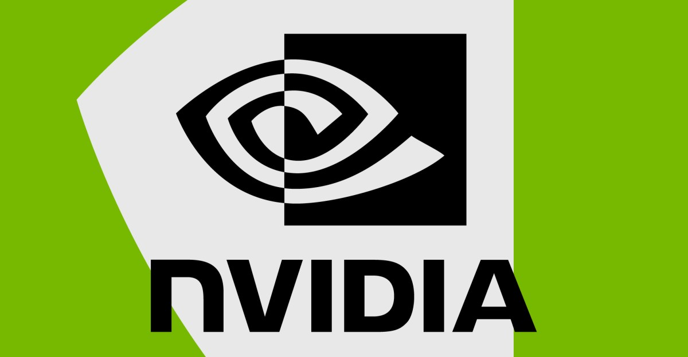

Technology · 18 Nov 2026
Read everything that Nvidia’s board chair had to say about Jensen Huang

Nvidia's quarterly earnings call on Tuesday was its first with CFO and interim CEO Colette Kress at the helm alongside the company's first board chair, Harvey C. Jones. The leadership change followed Jensen Huang's resignation last week after reports he had multiple affairs - including one with form
Multiple independent publishers are reporting on the same development: Read everything that Nvidia’s board chair had to say about Jensen Huang.
The available reports place the development in the Technology category. The accounts were compared for agreement on the central event rather than simply shared names or broad topics.
One of the available reports describes the development this way: Nvidia's quarterly earnings call on Tuesday was its first with CFO and interim CEO Colette Kress at the helm alongside the company's first board chair, Harvey C. Jones. The leadership change followed Jensen Huang's resignation last week after reports he had multiple affairs - including one with former Megaspeed executive and alleged Chinese asset Alice […]
Readers should consult the linked source reports for additional context, updates and details that may change as the story develops.
Sources
This article was produced by the C. O. Eric AI Newsroom from the cited sources. It is published only after automated evidence and safety checks.